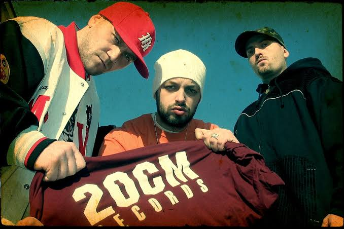
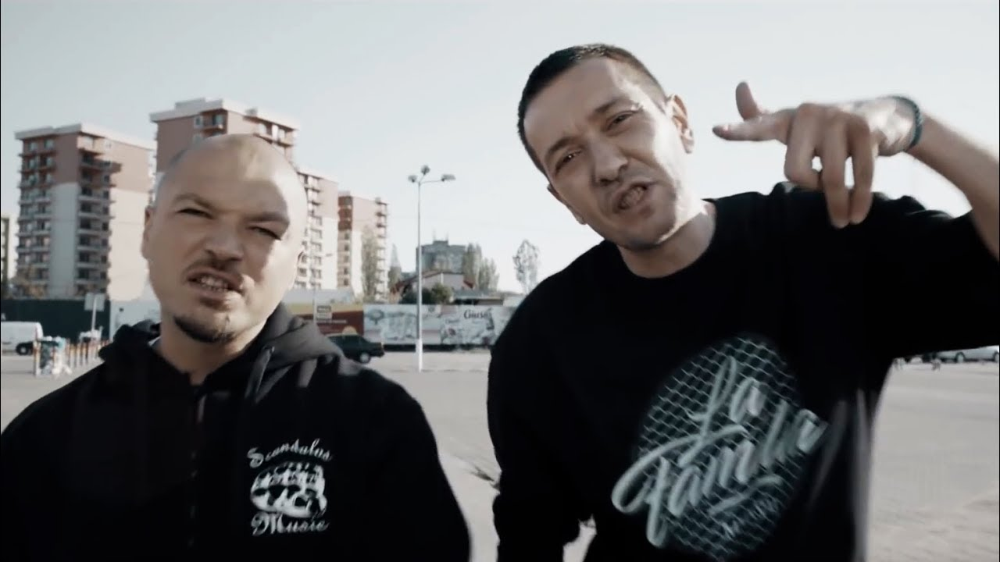
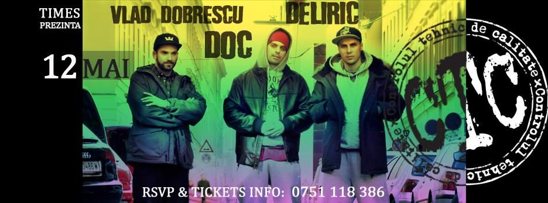

Blog
- Parazitii 
- La familia 
- Controlul tehnic de calitate 
The group was subject to multiple restrictions by the Romanian National Audiovisual Council, due to explicit language. Romanian television and radio stations were fined for playing some of their videos/songs and two videos were banned outright. This motivated their song "Jos cenzura!" ("Down with Censorship!") which criticized the Social Democratic government and was released shortly before the local elections in June 2004; the music video includes a monologue of Larry Flynt criticising Romania's government for its censorship practices.
La Familia s-a format ca trupă în anul 1996, pe străzile din zona Sălăjan a cartierului Balta Albă, București, avându-i ca membri pe Dragoș „Puya” Gărdescu și Tudor Sișu. Cei doi au avut o ascensiune rapidă, cucerind publicul din România prin atitudinea lor nouă pentru piața muzicală, ei fiind apreciați pentru stilul original, pentru viziunea lor asupra vietii de cartier și pentru depictarea detaliată a Bucureștiului acelor vremuri.
C.T.C. este o trupă de hip-hop din România. Trupa s-a înființat la sfârșitul anului 1999 în formula DOC (Vlad Munteanu), Deliric (Răzvan Eremia) și Vlad Dobrescu. DJ Paul s-a alăturat odată cu trecerea lui Vlad Dobrescu de la platane la microfon, însă acesta a părăsit formația. Mai apoi DJ Nasa s-a alăturat trupei.